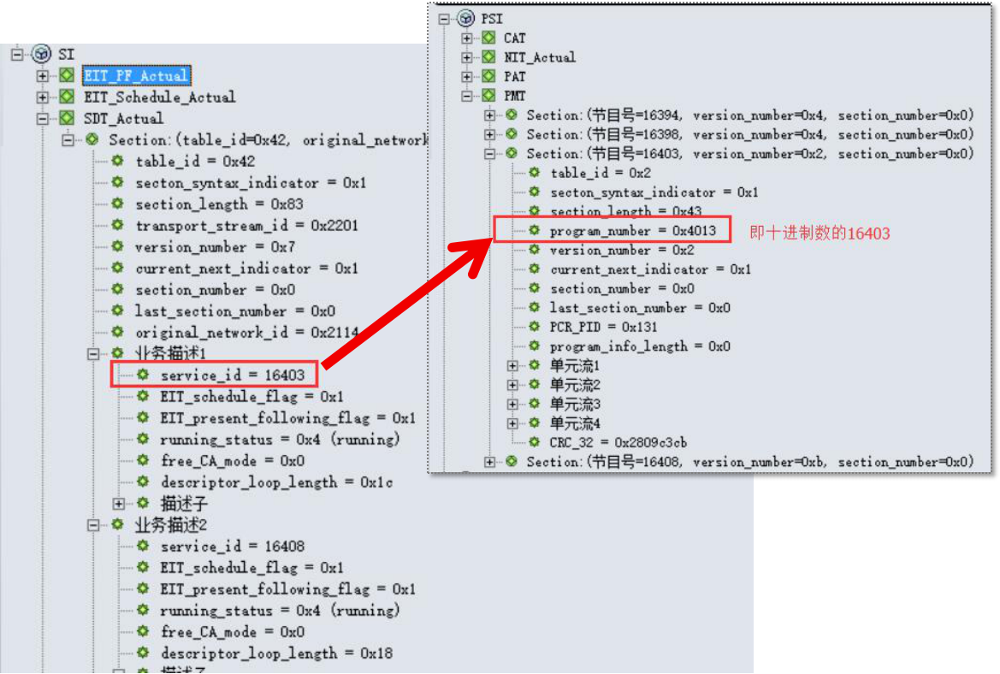
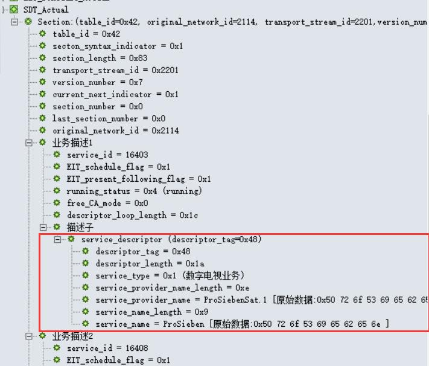
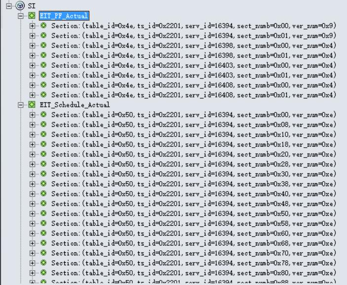
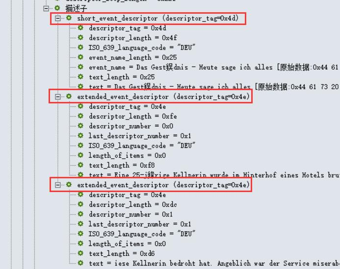
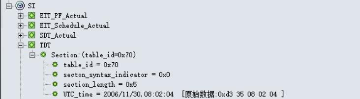

PSI/SI资料快查
资料入口

这里是PSI/SI相关资料的主入口， 你有任何需要查询的资料，都可以从这里开始寻找...
- 首页 返回首页
- 基础
- PSI/SI名词速查
- TS流的制作、传输及解析
- PSI信息
- PAT表、 PMT表、 NIT表、 CAT表
- SI信息
- SDT表、 EIT表、 TDT表、 BAT表、 TOT表、 RST表、 SIT表、 ST表、 DIT表
- 描述子Descriptor列表
- 进入详细列表
- 表格
- 进入详细列表
版权声明：未经许可，请勿转载！
©2016 · OneLib智库 · 分享知识和经验，打造精品智库平台
PSI/SI表结构分析
解析PSI/SI里的各表结构
本章主要针对PSI/SI里的PAT、PMT、CAT、NIT以及SDT、EIT、TDT、TOT、BAT等表的结构进行解析。 本资料主要参考了European Standard提供的英文文档《En300468.V1.7.1_Specification for SI in DVB Systems》 和国家广播电影电视总局提供的中文文档《数字视频广播中文业务信息规范》。
本章中，每小节的结构：概述该表，列举该表的PID、存储信息的段table_id， 之后会给出表结构、存在的描述子，描述子不在此展开分析，需要查看的话可点开链接进入描述子专项资料页面， 最后会给出一个或多个实际案例来分析各表。
PAT表解析
Parse PAT(Program Association Table)
"PAT是机顶盒接收的入口点，是它获取数据的开始"
PAT表结构
下表是PAT结构：
| Syntax(句法结构) | No. of bits(所占位数) | Identifier(识别符) | Note(注释) |
| program_association_section(){ | |||
| table_id | 8 | uimsbf | 表标识符 |
| Section_syntax_indicator | 1 | bslbf | 段语法指示符，通常设置为“1” |
| "0" | 1 | bslbf | zero |
| Reserved | 2 | bslbf | 保留 |
| Section_length | 12 | uimsbf | 注释 |
| transport_stream_id | 16 | uimsbf | 注释 |
| Reserved | 2 | bslbf | 保留 |
| Version_number | 5 | uimsbf | 注释 |
| Current_next_indicator | 1 | bslbf | 注释 |
| Section_number | 8 | uimsbf | 注释 |
| last_section_number | 8 | uimsbf | 注释 |
| for(i=0;i<N;i++){ | |||
| program_number | 16 | uimsbf | 注释 |
| reserved | 3 | bslbf | 保留 |
| if(program_number == 0){ | |||
| network_PID | 13 | uimsbf | 注释 |
| } | |||
| else{ | |||
| program_map_PID | 13 | uimsbf | 注释 |
| } | |||
| } | |||
| CRC_32 | 32 | rpchof | 注释 |
| } | |||
这里我们注意关注五个字段：
- table_id：PAT的table_id应为0x00
- transport_stream_id（传输流标志）：用以标识来源于网络中任何其他复合流的TS流
- program_number（节目号）：规定program_map_PID可适用的节目。当值为0x0000时，其后的PID参照将是网络PID。它可以作为一个指示符号，例如用于广播通道。
- network_PID（网络PID）：仅当program_number为0x00时使用
- program_map_PID（节目映射PID）：据此找出相应的PMT表
PAT表实例
在下图中，我们可以看到PAT表携带的基本信息。
 PAT表一览
PAT表一览
首先，table_id=0x0。网络信息表的PID为0x10。网络中有四路节目，并给出了每个节目的program_number以及每个节目的PMT PID。 在解析完PAT表后，就可以根据这里得到的四个PMT PID去过滤对应PID号的PMT表，从而得到每个节目的更详细信息。
PMT表解析
Parse PMT(Program Map Table)
"PMT是连接节目号与节目元素的桥梁"
节目映射表PMT的意义在于，它给出了节目号与组成这个节目元素之间的映射； 也就是说，PMT是连接节目号与节目元素的桥梁。 我们知道，一个电视节目至少包含了视频和音频数据，而每一个节目的视音频数据都是以包的形式在TS流中传输的； 所以说，一个TS流包含了多个节目的视频和音频数据包。 要想过滤出一个TS流中其中一个节目的视频和音频，则需要知道这个节目中视频和音频的标识号PID。 PMT表的作用就在于，它提供了每个节目视频、音频（或其他）数据包的PID。
PMT表结构
下表是PMT结构：
| Syntax(句法结构) | No. of bits(所占位数) | Identifier(识别符) | Note(注释) |
| program_map_section(){ | |||
| table_id | 8 | uimsbf | 表标识符 |
| Section_syntax_indicator | 1 | bslbf | 段语法指示符，通常设置为“1” |
| "0" | 1 | bslbf | zero |
| Reserved | 2 | bslbf | 保留 |
| Section_length | 12 | uimsbf | 注释 |
| program_number | 16 | uimsbf | 节目号，与service_id对应 |
| Reserved | 2 | bslbf | 保留 |
| Version_number | 5 | bslbf | 注释 |
| Current_next_indicator | 1 | bslbf | 注释 |
| Section_number | 8 | uimsbf | 注释 |
| last_section_number | 8 | uimsbf | 注释 |
| reserved | 3 | bslbf | 保留 |
| PCR_PID | 13 | uimsbf | 注释 |
| reserved | 4 | bslbf | 保留 |
| program_info_length | 12 | uimsbf | 头两位为“00” |
| for(i=0;i<N;i++){ | |||
| descriptor() | |||
| } | |||
| for(i=0;i<N1;i++){ | |||
| stream_type | 8 | uimsbf | 注释 |
| reserved | 3 | bslbf | 保留 |
| elementary_PID | 13 | uimsbf | 注释 |
| reserved | 4 | bslbf | 保留 |
| ES_info_length | 12 | uimsbf | 头两位为"00" |
| for(i=0;i<N2;i++){ | |||
| descriptor() | |||
| } | |||
| } | |||
| CRC_32 | 32 | rpchof | 注释 |
| } | |||
注意到，PMT表中有两个地方有Descriptor():
- Mosaic descriptor：查看！！
- Service move descriptor：查看！！
- Stream identifier descriptor：查看！！
- Teletext descriptor：查看！！
PMT表实例
在下图中，我们可以看到PMT表携带的基本信息。一共有四个section，是四张PMT表的信息；其中，每个section存储在一个PMT表中，对应了一个节目的信息。 下面，我们以节目号为16398的节目为例进行分析。
 PMT表一览
PMT表一览
下图可以看到，一共有3个单元流，每一个单元流都是组成这个节目的一个 元素(或者说是分量)。 可以看到，这个节目包含一个MPEG2的视频(stream_type=0x02)、一个MPEG2的音频(stream_type=0x04)以及一个私有类型(stream_type=0x06)的数据。
 节目号为16398的节目
节目号为16398的节目
下表是stream_type值的规定：
| stream_type | 描述 |
| 0x00 | ITU-T | ISO/IEC Reserved，国际标准保留 |
| 0x01 | ISO/IEC 11172 Video，视频 |
| 0x02 | ITU-T Rec. H.262 | ISO/IEC 13818-2 Video or ISO/IEC 11172-2 constrained parameter video stream，视频或受限参数视频流 |
| 0x03 | ISO/IEC 11172 Audio，音频 |
| 0x04 | ISO/IEC 13818-3 Audio，音频 |
| 0x05 | ITU-T Rec. H.222.0 | ISO/IEC 13818-1 private_sections |
| 0x06 | ITU-T Rec. H.222.0 | ISO/IEC 13818-1 PES packets containing private data,包含专用数据的PES分组 |
| 0x07 | ISO/IEC 13522 MHEG |
| 0x08 | ITU-T Rec. H.222.0 | ISO/IEC 13818-1 Annex A DSM CC |
| 0x09 | ITU-T Rec.H.222.1 |
| 0x0A | ISO/IEC 13818-6 type A |
| 0x0B | ISO/IEC 13818-6 type B |
| 0x0C | ISO/IEC 13818-6 type C |
| 0x0D | ISO/IEC 13818-6 type D |
| 0x0E | ISO/IEC 13818-1 auxiliary |
| 0x0F - 0x7F | ITU-T Rec. H.222.0 | ISO/IEC 13818-1 Reserved，GB/T保留 |
| 0x80 - 0xFF | User Private，用户专用 |
该节目的单元流2是音频分量的信息，可以看出，该音频语言为“deu”，即德语；其audio_type=0x1。 单元流3是Teletext分类，其语言编码也是“deu”，teletext_type=0x1。下面给出了teletext_type值的规定：
| teletext_type | 描述 |
| 0x00 | 保留 |
| 0x01 | initial Teletext page |
| 0x02 | Teletext subtitle page |
| 0x03 | additional information page |
| 0x04 | programme schedule page |
| 0x05 | Teletext subtitle page for hearing impaired people，听障人士Teletext字幕 |
| 0x06 - 0x1F | 保留 |
 节目号为16398的节目的单元流2和单元流3
节目号为16398的节目的单元流2和单元流3
CAT表解析
Parse CAT(Program Map Table)
"CAT描述了节目的加密方式"
条件接收表CAT描述了节目的加密方式，它包含了节目的 EMM 识别PID。 它给出了一个或多个CA系统、EMM流以及与CA相关的特定参数之间的关系。
CA描述符既用于规定像EMM这样的系统范围条件接收管理信息，也用于规定像ECM这样的基本流特定信息。
- 如果一个基本流（Elementary Stream）是加扰的，那么包含该基本流的节目信息PMT中需要一个CA描述符
- 如果一个TS流中有任何一个系统范围的条件接收管理信息，则条件接收表中应有CA描述符。
CAT表的结构分析
下表是CAT结构：
| Syntax(句法结构) | No. of bits(所占位数) | Identifier(识别符) | Note(注释) |
| conditional_access_section(){ | |||
| table_id | 8 | uimsbf | 表标识符 |
| Section_syntax_indicator | 1 | bslbf | 段语法指示符，通常设置为“1” |
| "0" | 1 | bslbf | zero |
| Reserved | 2 | bslbf | 保留 |
| Section_length | 12 | uimsbf | 注释 |
| Reserved | 18 | bslbf | 保留 |
| Version_number | 5 | uimsbf | 注释 |
| Current_next_indicator | 1 | bslbf | 注释 |
| Section_number | 8 | uimsbf | 注释 |
| last_section_number | 8 | uimsbf | 注释 |
| for(i=0;i<N;i++){ | |||
| descriptor() | |||
| } | |||
| CRC_32 | 32 | rpchof | 注释 |
| } | |||
CAT表的描述子
注意到，CAT表中有一个Descriptor():
- CA identifier descriptor：查看！！
CAT表实例
下图是一个CAT表的实例：
 CAT表一览
CAT表一览
NIT表解析
Parse NIT(Network Information Table)
"NIT描述了数字电视网络中与网络相关的信息"
NIT描述了数字电视网络中与网络相关的信息，但这个表本身的信息有限，更多的信息是依靠插入表中的描述符来提供的。 NIT常用的描述符有：网络名称描述符（network_name_descriptor）、有线传送系统（cable_delivery_system_descriptor）、业务列表描述符（service_list_descriptor）和链接描述符（linkage_descriptor）。
网络信息表NIT（见表3）传递了与通过一个给定的网络传输的复用流/TS流的物理结构相关的信息，以及与网络自身特性相关的信息。在本标准应用的范围内，original_network_id 和 transport_stream_id 两个标识符相结合唯一确定了网络中的TS流。各网络被分配独立的 network_id值作为网络的唯一识别码。这些码字的分配见ETR 162。当NIT表在生成TS流的网络上传输时，network_id和original_network_id将取同一值。
传输媒体边界间转换的业务信息处理指南见ETR 211。例如：从卫星系统到有线电视系统或SMATV（卫星公共天线电视）系统。
当转换频道时，为了使存取时间最小，IRD可以在非易失性存储器上存储NIT表信息。除现行网络外，也可以为其他网络传输NIT表信息。现行网络的NIT表与其他网络的NIT表使用不同的table_id值来区分（见表2）
NIT表的结构分析
NIT表被切分成网络信息段（network_information_section）。任何构成NIT表的段，都要由PID为0x0010的TS包传输。描述现行网络（即包含NIT表的TS所在的网络）的NIT表的任何段的table_id值应为0x40，且具有相同的 table_id_extension （network_id）。现行网络的network_id字段的值的分配见ETR 162。指向一个现行网络之外的其它网络的NIT表的任何段的table_id值应取0x41，network_id字段的值的分配见ETR 162。
网络信息表（NIT）传递了与通过一个给定的网络传输的复用流/TS流的物理结构相关的信息，以及与网络自身特性相关的信息。下表是NIT结构：
| Syntax(句法结构) | No. of bits(所占位数) | Identifier(识别符) | Note(注释) |
| network_information_section(){ | |||
| table_id | 8 | uimsbf | 表标识符 |
| Section_syntax_indicator | 1 | bslbf | 段语法指示符，通常设置为“1” |
| Reserved_future_use | 1 | bslbf | 预留使用 |
| Reserved | 2 | bslbf | 保留 |
| Section_length | 12 | uimsbf | 注释 |
| Network_id | 16 | uimsbf | 注释 |
| Reserved | 2 | bslbf | 保留 |
| Version_number | 5 | uimsbf | 注释 |
| Current_next_indicator | 1 | bslbf | 注释 |
| Section_number | 8 | uimsbf | 注释 |
| last_section_number | 8 | uimsbf | 注释 |
| Reserved_future_use | 4 | bslbf | 预留使用 |
| Network_descriptors_length | 12 | uimsbf | 网络描述符长度 |
| for(i=0;i<N;i++){ | |||
| descriptor() | First descriptor loop | ||
| } | |||
| reserved_future_use | 4 | bslbf | - |
| transport_stream_loop_length | 12 | uimsbf | 传输流循环长度 |
| for(i=0;i<N;i++){ | |||
| transport_stream_id | 16 | uimsbf | 注释 |
| original_network_id | 16 | uimsbf | 注释 |
| reserved_future_use | 4 | bslbf | 预留使用 |
| transport_descriptors_length | 12 | uimsbf | 传输流描述符长度 |
| for(i=0;i<N;i++){ | |||
| descriptor() | Second descriptor loop | ||
| } | |||
| } | |||
| CRC_32 | 32 | rpchof | 注释 |
| } | |||
NIT表中的描述子
注意到NIT结构里出现了两个循环，分别成为第一层循环和第二层循环； 每层循环都插入了一个描述符，也就是一共插入了两个描述符。 这两个描述符的特点如下：
| 第一层描述符 | 作用域是针对整个网络的，如插入网络名称描述符、链接描述符等 |
| 第二层描述符 | 作用域是第一层循环所代表的一个TS流，如插入有线传输系统描述符 |
NIT表各层的Descriptor()包括:
-
第一层(First descriptor loop)
- Linkage descriptor：查看！！
- Multiligual network name descriptor：查看！！
- Network name descriptor：查看！！
-
第二层(Second descriptor loop)
- Delivery system descriptor：查看！！
- Service list descriptor：查看！！
- Frequency list descriptor：查看！！
-
在SI标准中规定：original_network_id和transport_stream_id两个标识符相结合唯一确定了网络中的TS流。
各网络被分配独立的network_id值作为网络的唯一识别码。
当NIT表在生成TS流的网络上传输时，network_id和original_network_id将取同一值。
此外，NIT表还有如下特点：
- NIT表被切分为网络信息段（network_information_section）
- 任何NIT的段都必须由PID为0x0010的TS包传输
- 现行网络的NIT表任何段的table_id值应为0x40，且具有相同的table_id_extension即（network_id）；
- 现行网络以外的其他网络NIT表的段table_id值应为0x41
NIT表实例
在下图中，我们可以看到NIT表的各个信息，如table_id=0x40、network_id=0x3022、NIT版本号(version_number=0x14)等。 另外，这里也出现了两层共三个描述子，接下来，我们逐个点开描述子来查看相关信息。
 NIT表一览
NIT表一览
第一层描述子：network_name_descriptor
下图是第一层的network_name_descriptor描述子。其descriptor_tag=0x40，网络名称(network name)为“T-Systems”。
 第一层：network_name_descriptor描述子
第一层：network_name_descriptor描述子
第二层描述子1：地面传输系统描述子terrestrial_delivery_system_descriptor
下图是第二层的第一个描述子terrestrial_delivery_system_descriptor。
可以看到，该网络的中心频点(center_frequency)为746MHz，带宽为8MHz。
注意，这个位置的描述子分为cable、satellite和terrestrial三种，长度都为13个字节，这使他们之间的转换变得方便；
而此案例中，判断描述子是terrestrial的原因，是descriptor_tag的值是0x5a。
descriptor_tag的值与描述子类型的对应关系如下：
| descriptor_tag | 描述子类型 | 说明 |
| 0x43 | satellite_delivery_system_descriptor | 卫星传输系统描述子 |
| 0x44 | cable_delivery_system_descriptor | 有线传输系统描述子 |
| 0x5a | terrestrial_delivery_system_descriptor | 地面传输系统描述子 |
第二层描述子2：有线传输系统描述子： cable_delivery_system_descriptor
下图是另一个码流的NIT表，该描述子的descriptor_tag=0x44，即有线传输系统（有线电视），所以其携带的传输系统描述子是cable_delivery_system_descriptor。
从图中可以看出，该有线电视网络的主频点是259MHz，符码率为6876M，调制方式为64QAM。
需要说明的是，这里的64QAM并不是直接给出的，而是按照下表的规定(Modulation scheme for cable)发出的代码：
| 调制方式（十六进制） | 描述 |
| 0x00 | 未定义 |
| 0x01 | 16 QAM |
| 0x02 | 32 QAM |
| 0x03 | 64 QAM |
| 0x04 | 128 QAM |
| 0x05 | 256 QAM |
| 0x06 - 0xFF | 预留使用 |
 cable_delivery_system_descriptor，有线传输系统描述子
cable_delivery_system_descriptor，有线传输系统描述子
第二层描述子3：卫星传输系统描述子： satellite_delivery_system_descriptor
下图是另一个码流的NIT表，该描述子的descriptor_tag=0x43，即卫星传输系统，所以其携带的传输系统描述子是satellite_delivery_system_descriptor。
从图中可以看出，该频点的信息为11554/H/29950。具体分析可参考该描述子专项说明：查看！！
第二层描述子4：业务列表描述子： service_list_descriptor
下图是第二层的第二个描述子service_list_descriptor(业务列表)。它给出了业务根据其id和type排序的一种方式。
从图中可以看到，该网络的有四个业务，且四个业务均为数字电视业务。
其节目号(service_id)分别为16403、16408、16394和16398。
这里要特别说明的是，service_id 与 PMT表里的program_number相对应（service_type = 0x04 (NVOD reference service)除外）。
 第二层2：service_list_descriptor描述子
第二层2：service_list_descriptor描述子
上面描述子中，有一个service_type字段，它的值可参照下表Service type coding：
| service_type | 说明(中文) | 说明(英文) |
| 0x00 | 预留使用 | reserved for future use |
| 0x01 | 数字电视业务 | digital television service |
| 0x02 | 数字音频广播业务 | digital radio sound service |
| 0x03 | 图文电视业务 | Teletext service |
| 0x04 | NVOD参考业务 | NVOD reference service |
| 0x05 | NVOD时移业务 | NVOD time-shifted service |
| 0x06 | 马赛克业务 | mosaic service |
| 0x07 | PAL制编码信号 | reserved for future use |
| 0x08 | SECAM制编码信号 | reserved for future use |
| 0x09 | D/D2-MAC | reserved for future use |
| 0x0A | 调频广播 | advanced codec digital radio sound servic |
| 0x0B | NTSC制信号 | advanced codec mosaic service |
| 0x0C | 数据广播业务 | data broadcast service |
| 0x0D | 公共接口使用预留 | reserved for Common Interface Usage (EN 50221 [39]) |
| 0x0E | RCS映射 | RCS Map (see EN 301 790 [7]) |
| 0x0F | RCS FLS | RCS FLS (see EN 301 790 [7])，RCS FLS |
| 0x10 | DVB MHP业务 | DVB MHP service |
| 0x11 | 预留使用 | MPEG-2 HD digital television service |
| 0x12 - 0x15 | 预留使用 | reserved for future use |
| 0x16 | 预留使用 | advanced codec SD digital television service |
| 0x17 | 预留使用 | advanced codec SD NVOD time-shifted service |
| 0x18 | 预留使用 | advanced codec SD NVOD reference service |
| 0x19 | 预留使用 | advanced codec HD digital television service |
| 0x1A | 预留使用 | advanced codec HD NVOD time-shifted service |
| 0x1A | 预留使用 | advanced codec HD NVOD reference service |
| 0x1C - 0x7F | 预留使用 | reserved for future use |
| 0x80 - 0xFE | 用户定义 | user defined |
| 0xFF | 预留使用 | reserved for future use |
|
NOTE 1: MPEG-2 SD material should use this type NOTE 2: digital radio sound service | ||
SDT表
Parse SDT(Service Description Table)
"SDT描述了业务内容及信息，连接了NIT、EIT和PMT（PSI）"
SDT表被切分成业务描述段（service_description_section），由PID为0x0011的TS包传输（BAT段也由PID为0x0011的TS包传输，但table_id不同）。
描述现行TS（即包含SDT表的TS）的SDT表的任何段的table_id都为0x42，且具有相同的table_id_extension（transport_stream_id）以及相同的original_network_id。 指向非现行TS的SDT表的任何段的table_id都应取0x46。
业务描述表SDT（见下一节的SDT表结构）中的每一个子表，都用来描述包含于一个特定的传输流中的业务。 该业务可能是现行传输流中的一部分，也可能是其他传输流中的一部分，可以根据table_id 来确定区分上述两种情况（见表2）。
SDT表的结构分析
SDT表被切分成业务描述段（service_description_section）。任何构成SDT表的段，都要由PID为0x0011的TS包传输。描述现行TS（即包含SDT表的TS）的SDT表的任何段的table_id值应为0x42，且具有相同的table_id_extension（tranport_stream_id）以及相同的original_network_id。指向一个现行TS之外的其它TS的SDT表的任何段的table_id值应取0x46。
下表是SDT结构：
| Syntax(句法结构) | No. of bits(所占位数) | Identifier(识别符) | Note(注释) |
| service_description_section(){ | |||
| table_id | 8 | uimsbf | 表标识符 |
| Section_syntax_indicator | 1 | bslbf | 段语法指示符，通常设置为“1” |
| Reserved_future_use | 1 | bslbf | 预留使用 |
| Reserved | 2 | bslbf | 保留 |
| Section_length | 12 | uimsbf | 注释 |
| transport_stream_id | 16 | uimsbf | 传输流标识符，给出TS的识别号 |
| Reserved | 2 | bslbf | 保留 |
| Version_number | 5 | bslbf | 注释 |
| Current_next_indicator | 1 | bslbf | 注释 |
| Section_number | 8 | uimsbf | 注释 |
| last_section_number | 8 | uimsbf | 注释 |
| original_nerwork_id | 16 | uimsbf | 注释 |
| reserved_future_use | 8 | bslbf | 预留使用 |
| for(i=0;i<N;i++){ | |||
| service_id | 16 | uimsbf | 注释 |
| reserved_future_use | 8 | bslbf | 预留使用 |
| EIT_schedule_flag | 1 | bslbf | 注释 |
| EIT_present_following_flag | 1 | bslbf | 注释 |
| running_status | 3 | uimsbf | 注释 |
| freed_CA_mode | 1 | bslbf | 注释 |
| descriptors_loop_length | 12 | uimsbf | 描述符循环长度 |
| for(i=0;i<N;i++){ | |||
| descriptor() | |||
| } | |||
| } | |||
| CRC_32 | 32 | rpchof | 注释 |
| } | |||
SDT表的描述子
-
SDT 表中的Descriptor()：
- Bouquet name descriptor：查看！！
- CA identifier descriptor：查看！！
- Country availability descriptor：查看！！
- Data broadcast descriptor：查看！！
- Linkage descriptor：查看！！
- Mosaic descriptor：查看！！
- Multilingual service descriptor：查看！！
- NVOD reference descriptor：查看！！
- Service descriptor：查看！！
- Telephone descriptor：查看！！
- Time shifted service descriptor：查看！！
SDT表实例
在下图中，我们可以看到SDT表中的service_id=16403与PMT表中的program_number=0x4013(即16403)是对应的。 也就是说，通过解析SDT表获取到service_id=16403的节目信息后，可以存储到program_number=0x4013(即16403)的节目信息中。
SDT表与PMT表的映射关系在下图中，我们可以看到SDT表的基本信息。
SDT表和它的业务描述子Service descriptorEIT表
Parse EIT(Event Infomation Table)
"EIT按时间顺序提供每一个业务所包含的事件信息"
EIT即事件信息表（Event Information Table），它是EPG中绝大部分信息的携带者。 事实上，EPG主要就是通过SDT和EIT信息的获取和重组实现的。 SDT只提供了频道信息，而EIT则提供各频道下的所有节目的信息。 EIT的主要信息也是通过插入的描述符来实现的。 EIT按照时间顺序提供每一个业务所包含的事件的相关信息（如节目名称、节目简介）。
描述现行TS（即包含SDT表的TS）的SDT表的任何段的table_id都为0x42，且具有相同的table_id_extension（transport_stream_id）以及相同的original_network_id。 指向非现行TS的SDT表的任何段的table_id都应取0x46。
除准视频点播（NVOD）业务之外，当前/后续表中只包含在现行传输流或其他传输流中指定业务的当前事件和按时间顺序排列的后续事件的信息，因为NVOD业务可能包含两个以上的事件描述。无论是对现行传输流还是其他传输流，事件时间表都包含了以时间表的形式出现的事件列表，这些事件包括下一个事件之后的一些事件。EIT时间表是可选的，事件信息按时间顺序排列。
EIT表的结构分析
EIT表被切分成事件信息段。任何构成EIT表的段，都要由PID为0x0012的TS包传输。下表是EIT结构：
| Syntax(句法结构) | No. of bits(所占位数) | Identifier(识别符) | Note(注释) |
| event_information_section(){ | |||
| table_id | 8 | uimsbf | 表标识符 |
| Section_syntax_indicator | 1 | bslbf | 段语法指示符，通常设置为“1” |
| Reserved_future_use | 1 | bslbf | 预留使用 |
| Reserved | 2 | bslbf | 保留 |
| Section_length | 12 | uimsbf | 注释 |
| service_id | 16 | uimsbf | 注释 |
| Reserved | 2 | bslbf | 保留 |
| Version_number | 5 | bslbf | 注释 |
| Current_next_indicator | 1 | bslbf | 注释 |
| Section_number | 8 | uimsbf | 注释 |
| last_section_number | 8 | uimsbf | 注释 |
| transport_stream_id | 16 | uimsbf | 注释 |
| original_nerwork_id | 16 | uimsbf | 注释 |
| segment_last_section_number | 8 | uimsbf | 注释 |
| last_table_id | 8 | uimsbf | 注释 |
| for(i=0;i<N;i++){ | |||
| event_id | 16 | uimsbf | 事件标识符 |
| start_time | 40 | bslbf | 注释 |
| duration | 24 | bslbf | 注释 |
| running_status | 3 | uimsbf | 注释 |
| freed_CA_mode | 1 | bslbf | 注释 |
| descriptors_loop_length | 12 | uimsbf | 描述符循环长度 |
| for(i=0;i<N;i++){ | |||
| descriptor() | |||
| } | |||
| } | |||
| CRC_32 | 32 | rpchof | 注释 |
| } | |||
EIT表的描述子
-
EIT表中的Descriptor()：
- Component descriptor：查看！！
- Content descriptor：查看！！
- Data broadcast descriptor：查看！！
- Extended event descriptor：查看！！
- Linkage descriptor：查看！！
- Multilingual component descriptor：查看！！
- Parental rating descriptor：查看！！
- Short event descriptor：查看！！
- Telephone descriptor：查看！！
- Time shifted event descriptor：查看！！
EIT表实例
在下图中，两个部分的EIT信息都是针对当前的TS流(其table_id分别是0x4e和0x50，都是actual的EIT信息)。 其中，第一部分是针对当前TS流程中各业务的当前/后续事件信息(table_id=0x4e)； 第二部分是针对当前TS流中各业务的事件时间表信息。
EIT表中的当前TS流信息在下图中，红框内的信息即为一个EIT表的基本信息。这里的EIT表是当前TS流当前事件的EIT信息。
我们看的事件描述的描述子里，开始时间start_time为“2006/11/30 07:52:00”， 持续时间duration为“01:02:00”， 状态running_status为0x4(即running)， CA模式free_CA_mode为0x0(即free)。
 EIT表的基本信息和一个事件的描述
EIT表的基本信息和一个事件的描述
除了这些基本的事件信息，我们还可以继续往下一层的描述子查看更多信息。
如下图所示，这里有短事件描述子short_event_descriptor，它以文本方式提供了事件名称和该事件的简短描述；下图中，我们可以看到事件的编码为“DEU”(德语)，以及事件名称。
此外，还有拓展事件描述子extended_event_descriptor；它给出了一个事件的详细文本描述。如果一个事件的信息长度超过256字节，可以使用多于一个相关联的扩展事件描述符来描述。文本信息可以分为两个栏目，一栏为条目的描述，另一栏为条目的内容。
EIT表中一个事件的详细TDT表
Parse TDT(Time & Date Table)
"TDT仅传送UTC时间和日期信息，只有一个段"
TDT表的结构分析
TDT仅包含一个段，其结构如下：
| Syntax(句法结构) | No. of bits(所占位数) | Identifier(识别符) | Note(注释) |
| time_date_section(){ | |||
| table_id | 8 | uimsbf | 表标识符 |
| Section_syntax_indicator | 1 | bslbf | 段语法指示符，通常设置为“1” |
| Reserved_future_use | 1 | bslbf | 预留使用 |
| Reserved | 2 | bslbf | 保留 |
| Section_length | 12 | uimsbf | 注释 |
| UTC_time | 40 | bslbf | 注释 |
| } | |||
40位，包含了当前时间和日期(UTC)，头16位表示日期(16 LSBs of MJD)，后24位表示时间。
例如: 93/10/13 12:45:00表示为：“0xC079124500”
TDT表实例
下图可以看到，时间和日期是：2006/11/30 08:02:04
TDT表TOT表
Parse TOT(Time Offset Table)
"TOT是TDT的一个扩展，增加了一个描述符"
TOT表的结构分析
TOT表结构如下：
| Syntax(句法结构) | No. of bits(所占位数) | Identifier(识别符) | Note(注释) |
| time_date_section(){ | |||
| table_id | 8 | uimsbf | 表标识符 |
| Section_syntax_indicator | 1 | bslbf | 段语法指示符，通常设置为“1” |
| Reserved_future_use | 1 | bslbf | 预留使用 |
| Reserved | 2 | bslbf | 保留 |
| Section_length | 12 | uimsbf | 注释 |
| UTC_time | 40 | bslbf | 注释 |
| Reserved | 2 | bslbf | 保留 |
| descriptors_loop_length | 12 | uimsbf | 描述符循环长度 |
| for(i=0;i<N;i++){ | |||
| descriptor() | |||
| } | |||
| CRC_32 | 32 | rpchof | 注释 |
| } | |||
TOT表的描述子
注意到，这里的UTC_time和TDT表的UTC_time是一致的，都是以UTC和MJD形式表示当前时间和日期；其格式也与TDT的UTC_time相同，这里不再赘述。
-
TOT表中的Descriptor()：
- Local time offset descriptor：查看！！
TOT表实例
下图可以看到，前面部分和TDT表是一致的，只是后面多了一个描述子。从local_time_offset字段可以看出，该地区的时区是东一区，即UTC+1。
 TDT表
TDT表
国家代码 country_code
24位字段，按照ISO 3166用3字符代码指明国家。
每个字符根据GB/T 15273.1-1994编码为8位，并依次插入24位字段。
假设3个字符代表了一个900至999的数字，那么country_code指定了一组ETSI定义的国家。
其分配见ETR 162。国家组的国家代码应该被限制在同一时区内。
例如：英国由3字符代码“GBR”表示，编码为：“01000111 0100 0010 0101 0010”。
国家区域标识符 country_region_id
6位字段，表示country_code指明的国家所在的时区。若国家内部里没有时差，则置“000000”。
| country_region_id | 描述 |
| 00 0000 | 未使用时区扩展 |
| 00 0001 | 时区1（最东部） |
| 00 0010 | 时区2 |
| 00 0011 | 时区3 |
| ... | ... |
| 11 1100 | 时区60 |
| 11 1101 – 11 1111 | 预留 |
本地时间偏移极性 local_time_offset_polarity
1位字段，用于指明随后的local_time_offset的极性。
置“0”时，极性为正，说明本地时间早于UTC时间（通常在格林威治以东）；置“1”时，极性为负，说明本地时间晚于UTC时间。
本地时间偏移 local_time_offset
16位字段，指出由country_code和country_region_id确定的区域的相对于UTC的时间偏移，范围为-12小时至+13小时。
16比特含有4个4位BCD码，顺序为小时的十位，小时的个位，分的十位，分的个位。
时间变化 time_of_change
40位字段，指明时间改变时当前的日期（MJD）与时间（UTC），见附录C。
该字段分为两部分，前16位给出了LSB格式的日期（MJD），后24位给出了UTC时间（6个4位BCD码）。
下一时间偏移 next_time_offset
16位字段，指出由country_code和country_region_id确定的区域，当UTC时间变化时的下一个时间偏移，范围为-12小时至+13小时。
此16比特域为4个4位BCD码，依次为时的十位，时的个位，分的十位，分的个位。
BAT表
Parse BAT(Bouquet Association Table)
"BAT将网络中的所有业务分成了多个业务群，以此界定用户"
BAT即业务群关联表（BouquetAssociation Table），它将网络中所有的业务分成了多个业务群，以此界定用户。 例如，将网络中所有业务分为两个业务群，一个是境内节目业务群，另一个是境外节目业务群。 这样，国内的运营商就可以利用这样划分的业务群，充分利用节目资源，在不违反现有广电总局规定的前提下，同时分别满足境内用户和境外用户。
BAT本身可以跨网络存在，但在国内运营体系来看几乎没有得到真正使用。 国内的运营使用中，BAT还可以存在分级运营的运营体系中，用于区分不同的地域用户。
BAT表的结构分析
BAT表被切分成业务群关联段。BAT中的任何段都在TS包中传输，其PID值为0x0011。BAT表中描述特定的业务群的子表的段，要具有bouqet_id字段，取值分配见ETR162。所有BAT段的table_id值都取为0x4A。
BAT表结构如下：
| Syntax(句法结构) | No. of bits(所占位数) | Identifier(识别符) | Note(注释) |
| network_information_section(){ | |||
| table_id | 8 | uimsbf | 表标识符 |
| Section_syntax_indicator | 1 | bslbf | 段语法指示符，通常设置为“1” |
| Reserved_future_use | 1 | bslbf | 预留使用 |
| Reserved | 2 | bslbf | 保留 |
| Section_length | 12 | uimsbf | 注释 |
| bouquet_id | 16 | uimsbf | 注释 |
| Reserved | 2 | bslbf | 保留 |
| Version_number | 5 | uimsbf | 注释 |
| Current_next_indicator | 1 | bslbf | 注释 |
| Section_number | 8 | uimsbf | 注释 |
| last_section_number | 8 | uimsbf | 注释 |
| Reserved_future_use | 4 | bslbf | 预留使用 |
| bouquet_descriptors_length | 12 | uimsbf | 业务群描述符长度 |
| for(i=0;i<N;i++){ | |||
| descriptor() | First descriptor loop | ||
| } | |||
| reserved_future_use | 4 | bslbf | 预留使用 |
| transport_stream_loop_length | 12 | uimsbf | 传输流循环长度 |
| for(i=0;i<N;i++){ | |||
| transport_stream_id | 16 | uimsbf | 注释 |
| original_network_id | 16 | uimsbf | 注释 |
| reserved_future_use | 4 | bslbf | 预留使用 |
| transport_descriptors_length | 12 | uimsbf | 传输流描述符长度 |
| for(i=0;i<N;i++){ | |||
| descriptor() | Second descriptor loop | ||
| } | |||
| } | |||
| CRC_32 | 32 | rpchof | 注释 |
| } | |||
BAT表的描述子
对比NIT表的结构，BAT表和NIT表在结构上是一样的。BAT表也有两层的描述子。
BAT表各层的Descriptor()包括:
-
第一层(First descriptor loop)
- Bouquet name descriptor：查看！！
- CA identifier descriptor：查看！！
- Country availability descriptor：查看！！
- Linkage descriptor：查看！！
- Multiligual bouquet name descriptor：查看！！
-
第二层(Second descriptor loop)
- Service list descriptor：查看！！
BAT表实例
下图中，可以看到bouquet_name_descriptor的bouquet_name为“Fransat SD”。
 BAT表
BAT表
本章小结
Summary
本资料来源于规范的资料，如有疏漏，请以European Standard提供的英文文档《En300468.V1.7.1_Specification for SI in DVB Systems》 和国家广播电影电视总局提供的中文文档《数字视频广播中文业务信息规范》为准。 如果这两者有冲突，以英文文档为准。
参考文档
References
| # | 文档名称 | 作者 |
| 1 | 《PSI/SI教程：第一章：预备知识》 | 林晓州 |
| 2 | 《PSI/SI教程：第二章：从TS到PAT和PMT》 | 林晓州 |
| 3 | 《PSI/SI教程：第三章：深入学习PSI》 | 林晓州 |
| 4 | 《PSI/SI教程：第四章：深入学习SI》 | 林晓州 |
| 5 | 《En300468.V1.7.1_Specification for SI in DVB Systems》 | European Standard |
| 6 | DVB和MPEG-II中的表格 | 网络 |
| 7 | 《数字视频广播中文业务信息规范》 | 国家广播电影电视总局 |
版本信息
Version Information
| # | 发布日期 | 版本 | 更新内容 | 作者 | 审核 |
| 1 | 2016年02月24日 | V1.0 | 主要参考《PSI/SI教程：第三章：深入学习PSI》和《PSI/SI教程：第四章：深入学习SI》整理出该文档 | 林晓州 | —— |